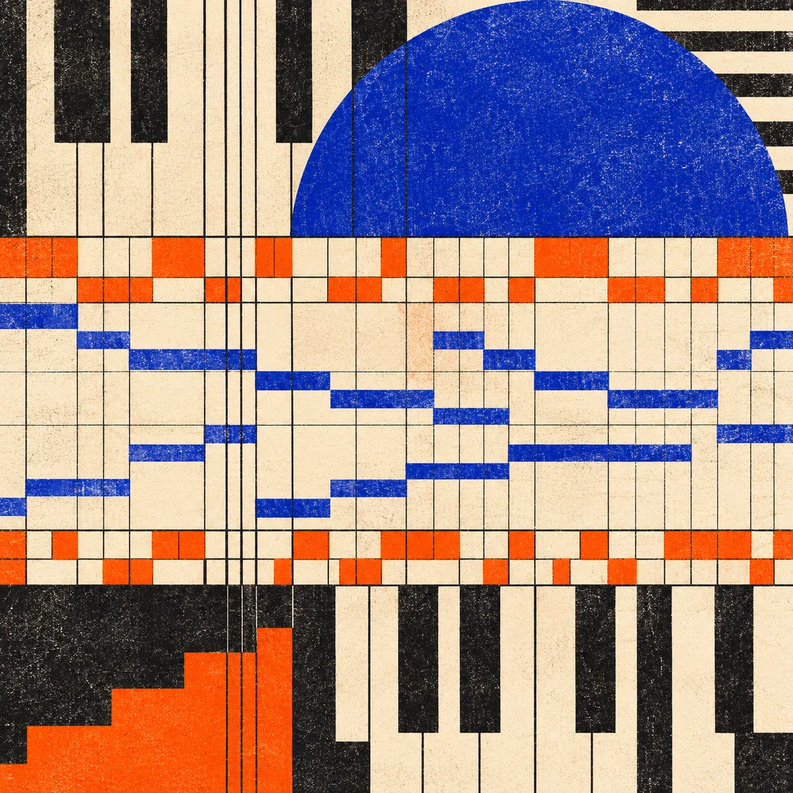

f01
Cross Grid
D natural minor
32 bars
160 BPM
4 / 4
160 BPM
4 / 4
Combined MIDI →
Original MIDI collection
Four original MIDI studies for producers who want to pull rhythm apart without losing the grid.

01 / studies
Each study holds to the same 32-bar frame while moving its accents, pitch collection, and relationship between pulse and interruption.
D natural minor
F Dorian
B Phrygian
A natural minor
The collection begins as original symbolic events. Each study is exported as six Format 0 role files plus one Format 1 combined MIDI, then the final bytes are read back against its catalog before any preview is made.
Named roles, 480 PPQ timing, declared pitch collection, and a 32-bar structural map.
Six isolated roles and one combined arrangement per study. Use one approach at a time, never stack both.
Parsing, timing, channel, note-pairing, overlap, catalog, archive, and media checks run against final bytes.
A simple-synth MP3 and captioned MP4 provide an inspectable listening reference, not a finished master.
Five pitched roles occupy user-facing channels 1–5; drums occupy channel 10. Bass and principal motif are monophonic. No program changes are encoded.
The film captions the preview limitations and identifies its source as the committed MIDI score.
04 / about
Footwork Codex is a set of four original MIDI studies about rhythmic displacement around a steady grid. It uses a bounded creative direction, not a claim to define a genre, its history, or its communities.
The public release includes its source-facing catalog so producers can inspect the event record, structural maps, and validation evidence alongside the playable files.